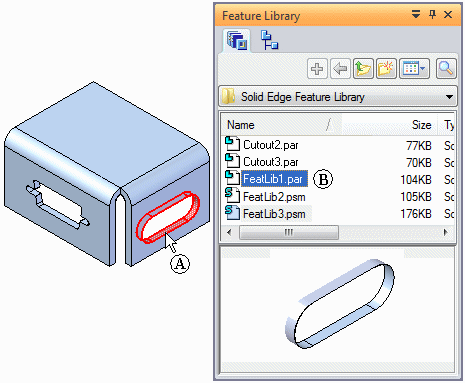
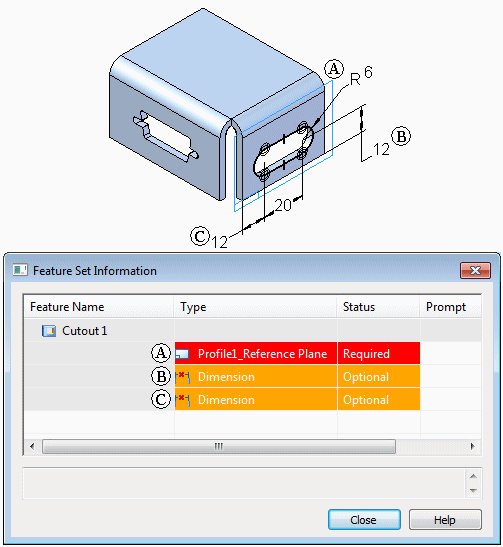
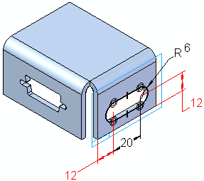

Storing features in a library
The steps for creating an unmanaged feature library member are:
For synchronous members:
-
Switch to the synchronous environment.
-
Select one or more synchronous elements.
-
On the Feature Library page, click the Add Entry
 button.Note:
button.Note:You can also select the synchronous elements, add them to the clipboard, and then paste into the Feature Library page.
-
Define a name for the library member using the Feature Library Entry dialog box.
For ordered members:
-
Switch to the ordered environment.
-
Select one or more ordered features.
-
On the Feature Library page, click the Add Entry
button.Note:You can also select the ordered elements, add them to the clipboard, and then paste into the Feature Library page.
-
Define custom prompts and notes for the library member using the Feature Set Information dialog box.
-
Define a name for the library member using the Feature Library Entry dialog box.
The steps for creating a Teamcenter-managed feature library member are:
-
Select a feature from the part.
-
Click the Teamcenter Feature Library tab.
-
Drag the geometric feature to the Teamcenter Feature Library page.
-
Complete the New Document dialog box.
A simple ordered example
To create a new ordered member in a feature library, select a feature (A). On the
Feature Library page, click the Add Entry button to add the new library member to a Feature Library folder (B).

When you click the Add Entry button on the Feature Library page, the Feature Set Information dialog box appears so you can review the required and optional elements of the new
library member, define custom prompts, and add notes for the library member elements.
The feature library stores each member you add as an individual document and the software assigns a default document name.
Selecting features
You can select features in the application window or on the PathFinder page. You can store a single feature in a library or you can store several features as a unit. To store multiple features as a unit, hold the Ctrl or Shift keys when you select the features.
When storing a single ordered feature, only a profile-based feature is valid. When storing several ordered features, the lower-most feature in the feature set must be a profile-based feature. Subsequent features can be profile-based or treatment features.
Ordered Feature Set Information dialog box
The Feature Set Information dialog box displays the features, reference planes, and dimension elements in the same sequence that will be used when the library member is placed. For example, when defining a library member for a cutout feature, the cutout feature is listed in the Feature Name column. Elements that belong to the cutout are listed in the Type column. This can include the profile plane (A) and any dimensions that reference edges outside the cutout profile (B) (C).
A Status column in the dialog box lists whether a library element is required or optional. A required element must be redefined when placing the library member. An optional element can be redefined when you place the library member or can be skipped and redefined later.
You can use the Prompt column to define custom prompts for each element in the Type list. This makes it easier for other users to place the library members.

Ordered dimensions that reference geometry outside the profile
When you create a new ordered feature library member, dimensions that reference geometry outside of the feature set are listed in the Feature Set Information dialog box, but you will need to redefine the external elements for the dimensions later. For example, the two 12 millimeter dimensions reference edges that are outside the library member profile.

You can redefine the dimension edges when you place the library member, or you can skip the dimensions and redefine the dimension edges by editing the feature.
Defining custom prompts and notes
To type custom prompts, double-click a Prompt cell, and then type the prompt you want. The prompts you type are displayed in the status bar on the command bar when you place the library feature. When you open a prompt cell, the message area at the bottom of the dialog box is also activated, so you can type more information about the element.
Closing the dialog box and renaming the library feature
When you click the Close button on the Feature Set Information dialog box, a new library member is added to the Feature Library page using a default document name. To rename a stored feature, select it in the Feature Library page, and then click the Rename command on the shortcut menu.
How do I
Create an unmanaged feature library memberPlace a feature library member into another document
Create a Teamcenter Feature Library member
Learn more
Feature librariesPlacing feature library members
Redefining parent edges
Feature library guidelines
Look up more details
Feature Library tabTeamcenter Feature Library tab